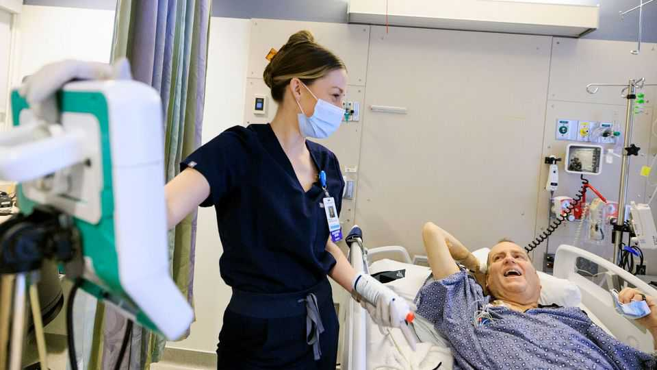

A transplanted pig kidney buys time for a human one to become available
That strengthens the case for such cross-species organ swaps

Sep 10th 2026
IN JANUARY Tim Andrews received a new kidney. It was not his first such replacement. Twelve months earlier, after years of end-stage renal failure and declining health even with dialysis, he had been given a genetically modified pig’s kidney to tide him over until a human one became available. It was the first time such “xenotransplantation” (previously employed as a last-ditch life-sustaining end in itself) had been used as a stop-gap in this way.
If a pig kidney were transplanted unmodified into a human the immune system would reject it. Moreover, its chromosomes would host so-called retroviruses, the DNA of which is integrated into normal DNA but can thence emerge to cause infection. However, eGenesis, the firm that provided Mr Andrews’s stop-gap organ, uses gene editing to tweak the pig cells’ DNA to stop either of those things happening while also introducing human genes that improve a transplant’s compatibility with the patient. These modified cells are used to generate embryos which, after implantation into a surrogate sow, develop into piglets that can act as organ donors.
Mr Andrews’s transplant, performed by a team led by Leonardo Riella of Massachusetts General Hospital, in Boston, and just reported in the Lancet, was not a perfect bridge to his second date with the operating table. But it lasted 271 days—a record for a xenotransplanted kidney. In that time, says Dr Riella, it provided “all the functions we would expect of a kidney”. Eventually, an infection caused it to fail and it had to be removed, so Mr Andrews returned to dialysis. But he transitioned to the human replacement without any complications from having had the porcine placeholder.
Xenotransplantation probably saved Mr Andrews’ life. It could save many others, too. In Britain alone, more than 7,000 are on the list for a kidney transplant. Last year, 328 of them died waiting. For those without a transplant, dialysis is currently the only option. Xenotransplantation offers an alternative way of staying alive. And, as the case of Mr Andrews well shows, where there’s life, there’s hope. ■